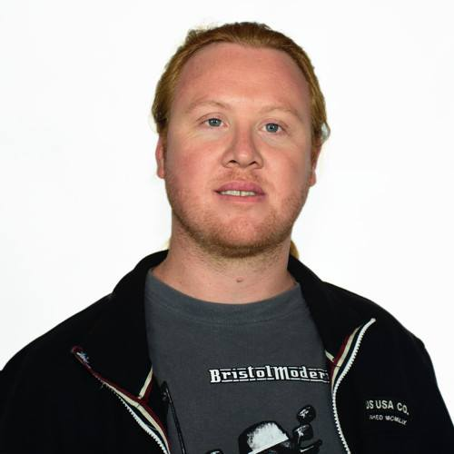

Leonardo Casales
Experiencia Laboral
- UCIP profesor curso desarrollo full stack - 2019/05 - actualmente
- Acámica mentor carrera desarrollo web full stack - 2019/08 - actualmente
- Avalith Desarrollador full stack Part-Time- 2019/09 - actualmente
- SmartNet propietario - Desarrollador de software - 2009/01 - actualmente
- Avalith trabajando como desarrollador backend 2018/09 - 2018/09 - Skill factory 2018/05 - 2018/08 desarrollos en proyectos full stack
Habilidades
- Trabajo en equipo
- Buena comunicación
- Proactivo
- Aprendizaje autónomo
- Metodologías
- Nivel Inglés pre-intemedio
Tecnologías
- HTML - CSS - JS ***
- C++ ****
- Java ***
- PHP ** Laravel ****
- JS ** Vue.JS ****
- Python / Flask *
- Bases de Datos: MySQL, MariaDB, PostgreSQL ****
- C# + Unity *
- Git ****
- Sistemas Operativos Windows - macOs - Linux ****
- Virtualización: VirtualBox, Vagrant, Docker ***
Estudios, cursos y capacitaciones recientes
- ISFT 151 Técnico superior en análisis de sistemas - Inicio 2015 / Restan 1 final y entregar la práctica profesional
- Universidad del Este Tramo de formación padagógica - Inicio 2019 / Actualidad 27%
- Ministerio de Producción y Trabajo Analista del conocimiento - Plan 111mil - Certificación 2019
- Avalith Skill Factory - Desarrollo Web FullStack - 2018/05 - 2018/08